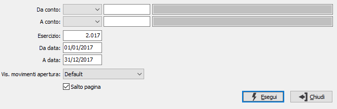

Stampa partitari
Il programma effettua la stampa delle schede contabili. Si differenzia dall’analogo programma Stampa situazione sottoconti esclusivamente perché stampa su ciascun rigo il numero dell’articolo contabile anzichè il numero di movimento di prima nota. Ciò può avvenire solo dopo la stampa definitiva del giornale di contabilità, che assegna il numero di articolo contabile. Ne consegue che in assenza di precedenti stampe di bollato, non viene stampato alcun numero di articolo contabile.
Si tratta quindi di un programma da utilizzare a fine esercizio per la stampa completa dei partitari, mentre per gli usi correnti si utilizza l’Analisi sottoconti a stampa.
Accedendo al programma appare la seguente maschera video:

DA TIPO CONTO/A TIPO CONTO: Indica la tipologia dei conti utilizzati come limiti: sottoconti, clienti o fornitori. Anche se lasciati vuoti, saranno valorizzati automaticamente al momento della conferma del rispettivo codice del conto.
DA SOTTOCONTO: Eventuale codice del sottoconto da cui si desidera iniziare la stampa. Confermando a vuoto, la stampa inizia dal primo sottoconto valido
A SOTTOCONTO: Eventuale codice del sottoconto a cui si vuole concludere la stampa. Confermando a vuoto, la stampa termina con l’ultimo sottoconto valido.
ESERCIZIO: Esercizio per il quale si desidera effettuare la stampa. Inserendo l'esercizio vengono automaticamente preposte come date di elaborazione la data di inizio e di fine dell'esercizio stesso.
DA DATA: Eventuale data dalla quale si desidera iniziare la stampa. Confermando a vuoto, la stampa inizia dalla prima registrazione valida dell’esercizio in corso
A DATA: Eventuale data alla quale si desidera terminare la stampa. Confermando a vuoto, la stampa termina con l’ultima registrazione valida dell’esercizio in corso.
VISUALIZZA MOVIMENTI APERTURA: definisce il criterio per cui saranno visualizzati o meno i movimenti di apertura; il parametro è significativo solo per chi non effettua l'apertura in data 01/01. Valori previsti:
Default: i movimenti saranno visualizzati solo se presenti nel periodo d'analisi richiesto (visualizzati con data del movimento).
Data inizio esercizio: i movimenti saranno visualizzati anche se successivi al periodo d'analisi richiesto (visualizzati con data inizio esercizio).
Data del movimento: i movimenti saranno visualizzati anche se successivi al periodo d'analisi richiesto (visualizzati con data del movimento).
SALTOPAGINA: se spuntato sarà stampato un conto per pagina.
La successiva pressione del bottone Esegui determina l’inizio della stampa.